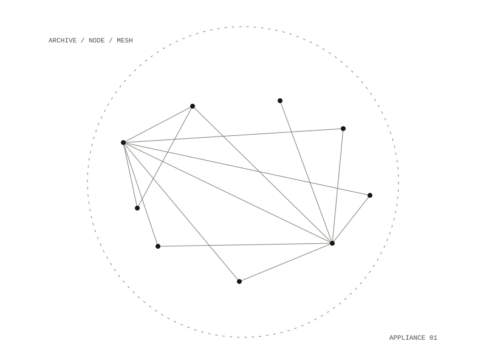

caer-stack
Infrastructure a community runs for itself: care, communication and management, on hardware it owns, that keeps working when the internet does not.

Who it is for
A neighbourhood association, a village hall, a school, a boat club, a field camp, a tenants' group, a clinic, a festival: anyone who needs somewhere to keep what they know, a way to talk, a way to coordinate, and for all of it to keep working when the internet does not.
What a box holds
Somewhere to keep what the group knows and ask questions of it, with answers that cite their sources. A way to talk. A way for people to contribute, and to take back what they gave. An offline library, offline maps and mesh radio as it grows.
Pick a profile, pick modules, and get an appliance, built declaratively from source. Hand someone a USB stick and they have another one.
The mailing lists
A message posted to a list is archived as a commit and sent on to every subscriber. Anyone not on the list is turned away, and the server refuses to relay mail for strangers.
The commons
A public front door for a walk-up node: a code on a wall opens a page where a visitor gives something from their phone as public, held, or sealed. A sealed gift is never written down; there is no field to record one in. Images are redrawn without their metadata, audio and video are remuxed without theirs.
Taking something back
A public offering can be pulled into the archive, cited in an answer, then taken down, after which it can no longer be cited and cannot return by being read in again. One test walks that whole path.
a Raspberry Pi, a small server, or a Mac as a workstation node
Debian 13, amd64 and arm64
personal · workstation · community · gathering